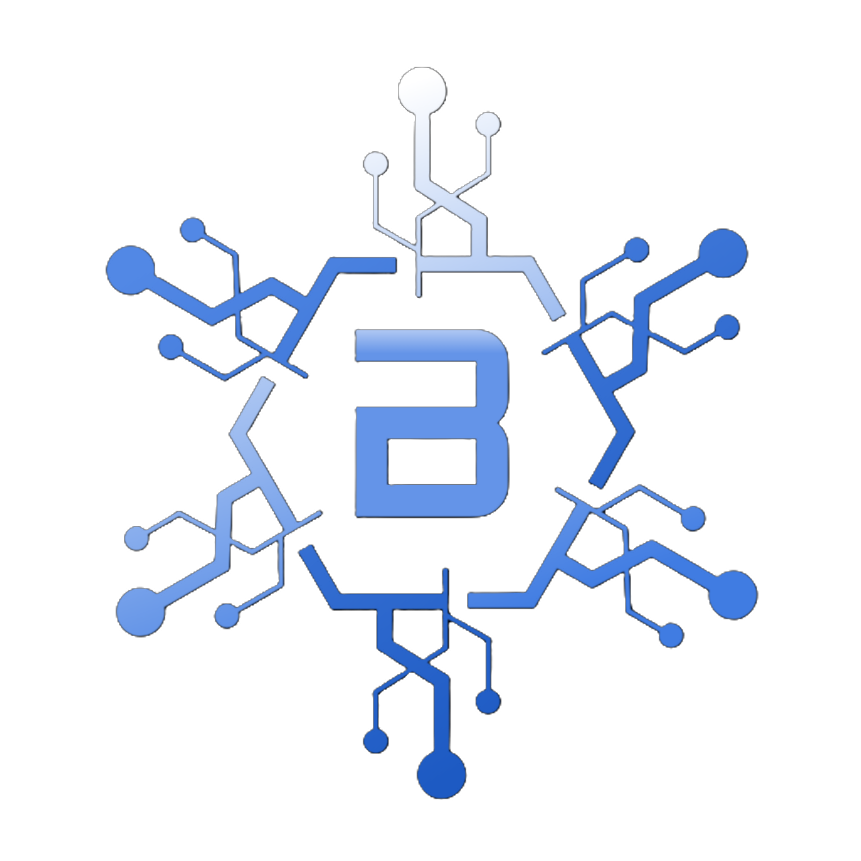

Bluechip LabsBluechip Labs designs rules-based, defensive digital-asset systems — engineered around risk controls first, not hype. Our flagship project is Bluechip 25 Defender Index (BC25).
Who we are
Most crypto products chase upside. Bluechip Labs builds the opposite discipline into the architecture itself: systematic, transparent rules that prioritize capital preservation and downside protection. Everything we ship is spec-driven, tested, and governed.
Products are built around a rules-based safety framework that shifts toward defensive assets under market stress — before it does the exciting stuff.
Behavior is defined by explicit parameters and state machines, documented in a canonical build packet — not by ad-hoc decisions.
Contracts are covered by extensive automated tests and static analysis, with on-chain roles held behind a multi-sig and timelock.
Flagship project
A rules-based, defensive crypto index token. Rather than trying to make its price track a target, BC25 holds a diversified basket and uses a safety-state machine to shift weight toward defensive assets under stress — the core philosophy: protect gains on the way down.
A diversified mix across three roles, rebalanced by rules rather than by prediction:
Example of Holdings:
A safety-state machine moves the index through defined postures — from normal operation through progressively more defensive states — as market conditions deteriorate, and stages its way back on genuine recovery.
Weightings and triggers are set by named, published parameters. Fee and reserve mechanics are engineered to be transparent and rules-bound, with a separate holder-facing utility layer for staking and real-yield fee-sharing.
Where it stands
How we work
Every mechanism starts as a written spec with named parameters and acceptance tests, becomes auditable code, and is proven against that spec before it ships.
Doctrine, parameters, and controls are documented as a canonical source of truth before implementation begins.
Contracts are implemented with matching test coverage, invariant checks, and static analysis integrated into CI.
Live systems run under multi-sig + timelock governance, with third-party audit as the gate to production.
Contact
Questions, partnership ideas, or just want to follow the project? Reach out directly.
✉️ Email Bluechip LabsBluechip Labs is an independent development company. The information on this page is provided for general informational purposes only and does not constitute financial, investment, legal, or tax advice, nor an offer, solicitation, or recommendation to buy or sell any asset. The BC25 Defender Index is in development and is not currently available to the public; no aspect of its design guarantees any outcome, return, or protection against loss. Digital assets are volatile and carry significant risk. Do your own research and consult a licensed professional before making any financial decision.